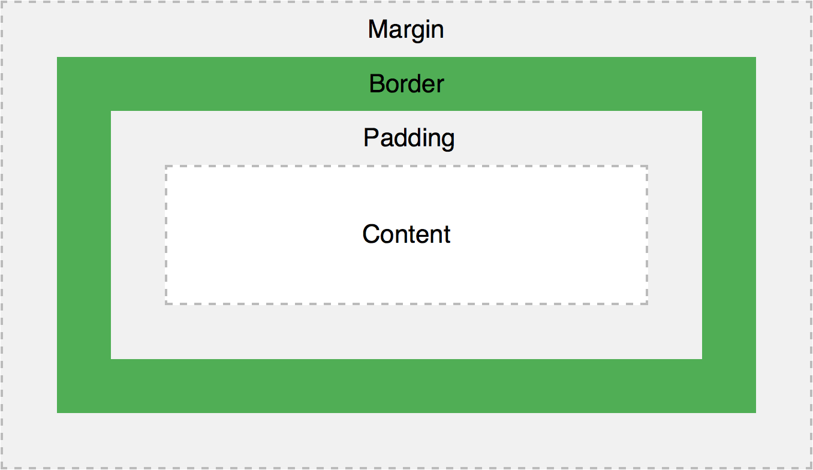

Lesson 1: CSS Syntax, CSS selectors, Insert CSS (Cascading Order), How to use Web Inspector (Safari, Chrome og Firefox), CSS Text, CSS Fonts, Google Fonts (FontSquirrel), CSS Zen Garden
CSS Syntax (Try it out)
The element selector
The id selector
The class selector (for all elements)
The class selector (for only <p> elements)
Grouping selectors
CSS Text (Try it out)
Set the text color of different elements
Align the text
Remove the line under links
Decorate the text
Control the letters in a text
Indent text
Specify the space between characters
Specify the space between lines
Set the text direction of an element
Increase the white space between words
Specify a text shadow for an element
Disable text wrapping inside an element
Vertical alignment of an image inside text
CSS Fonts (Try it out)
Set the font of a text
Set the size of the font
Set the size of the font in px
Set the size of the font in em
Set the size of the font in percent and em
Set the style of the font
Set the variant of the font
Set the boldness of the font
All the font properties in one declaration
Learn how to use Google Fonts on your web page.
Check out Font Squirrel, too...
For inspiration: Visit CSS Zen Garden and see the same page with a multitude of different styles
Inspect and debug your CSS with Chrome Developer tools for CSS (note that the developer tools in Safari, Firefox and Edge has similar features.)
Lesson 2: CSS Colors (Color Names, RGB, HEX, HSL, RGBA, HSLA), Background Color, Text Color, Border Color, CSS Backgrounds, CSS Box Model, Width and Height, CSS Padding, CSS Borders, CSS Margins, The inherit Value, Margin Collapse, Max-width, CSS Outline
CSS Colors
CSS Backgrounds
Set the background color of a page
Set the background color of different elements
Set an image as the background of a page
How to repeat a background image only horizontally
How to position a background image
A fixed background image (this image will not scroll with the rest of the page)
All the background properties in one declaration
Advanced background example
Background properties explained
CSS Box Model
Demonstrating the box model
Specify an element with a total width of 250px
CSS Height/Width
Set the height and width of an element
Set max-width of an element
Set the height and width of different elements
Set the height and width of an image using percent
Set min-width and max-width of an element
Set min-height and max-height of an element
Dimension properties explained
CSS Padding
Set the left padding of an element
Set the right padding of an element
Set the top padding of an element
Set the bottom padding of an element
All the padding properties in one declaration
CSS Borders
Set the width of the four borders
Set the width of the top border
Set the width of the bottom border
Set the width of the left border
Set the width of the right border
Set the style of the four borders
Set the style of the top border
Set the style of the bottom border
Set the style of the left border
Set the style of the right border
Set the color of the four borders
Set the color of the top border
Set the color of the bottom border
Set the color of the left border
Set the color of the right border
All the border properties in one declaration
Add rounded borders to an element
Set different borders on each side
All the top border properties in one declaration
All the bottom border properties in one declaration
All the left border properties in one declaration
All the right border properties in one declaration
CSS Margins
Specify different margins for each side of an element
Let the left margin be inherited from the parent element
The margin shorthand property
Set margin to auto to center the element within its container
CSS Outline
Draw a line around an element (outline)
Set the style of an outline
Set the color of an outline
Set the width of an outline
Lesson 3: CSS Icons (Font Awesome, Bootstrap, Google), CSS Links, Link Buttons, CSS Lists, CSS Tables, CSS Display (Block and Inline, None), CSS Layout (Max-width, rep.)
CSS Icons
Font Awesome icons
Bootstrap icons
Google icons
Full Icons reference (Font Awesome, Bootstrap and Google)
Bootstrap Cheatsheet (including Font Awesome)
CSS Links
Add different colors to visited/unvisited links
Use of text-decoration on links
Specify a background color for links
Add other styles to hyperlinks
Different types of cursors
Advanced - Create link boxes
Advanced - Create link boxes with borders
CSS Lists
All the different list item markers in lists
Set an image as the list-item marker
Position the list-item marker
Remove default list settings
All list properties in one declaration
Style lists with colors
Full-width bordered list
Example of ordered list: Counting in Chinese
Nested List example from class
CSS Tables
Specify a black border for table, th, and td elements
Use of border-collapse
Single border around the table
Specify the width and height of a table
Set the horizontal alignment of content (text-align)
Set the vertical alignment of content (vertical-align)
Specify the padding for th and td elements
Horizontal dividers
Hoverable table
Striped tables
Specify the color of the table borders
Set the position of the table caption
Responsive Table
Create a fancy table
CSS Display
How to hide an element (visibility:hidden)
How to not display an element (display:none)
How to display a block-level element as an inline element
How to display an inline element as a block-level element
How to to use CSS together with JavaScript to show hidden content
CSS Display example from class
Lesson 4: CSS Position (static, relative, fixed, absolute, sticky), CSS Overflow, CSS Float, CSS Inline block, CSS Align, CSS Combinators, CSS Pseudo-class, CSS Pseudo-element, CSS Navigation Bar, CSS Website Layout
CSS Positioning
Position an element relative to the browser window
Position an element relative to its normal position
Position an element with an absolute value
Sticky positioning
Overlapping elements
Set the shape of an element
Set the top edge of an image using a pixel value
Set the bottom edge of an image using a pixel value
Set the left edge of an image using a pixel value
Set the right edge of an image using a pixel value
Position image text (top left corner)
Position image text (top right corner)
Position image text (bottom left corner)
Position image text (bottom right corner)
Position image text (centered)
Positioning properties explained
CSS Overflow
Using overflow: visible - The overflow is not clipped. It renders outside the element's box.
Using overflow: hidden - The overflow is clipped, and the rest of the content is hidden.
Using overflow: scroll - The overflow is clipped, but a scrollbar is added to see the rest of the content.
Using overflow: auto - If overflow is clipped, a scrollbar should be added to see the rest of the content.
Using overflow-x and overflow-y.
CSS Floating
A simple use of the float property
An image with border and margins that floats to the right in a paragraph
An image with a caption that floats to the right
Let the first letter of a paragraph float to the left
Create an image gallery with the float property
Turning off float (using the clear property)
Creating a horizontal menu
Creating a homepage without tables
Fighting the Space Between Inline Block Elements
CSS Aligning Elements
Center aligning with margin
Center aligning text
Center an image
Left/Right aligning with position
Left/Right aligning with position - Crossbrowser solution
Left/Right aligning with float
Left/Right aligning with float - Crossbrowser solution
Center vertically with padding
Center vertically and horizontally
Center vertically with line-height
Center vertically and horizontally with position
CSS Combinators
Descendant selector
Child selector
Adjacent Sibling selector
General Sibling selector
Combinator selectors explained
CSS Pseudo-classes
Add different colors to a hyperlink
Add other styles to hyperlinks
Use of :focus
:first-child - match the first p element
:first-child - match the first i element in all p elements
:first-child - Match all i elements in all first child p elements
Use of :lang
CSS Pseudo-elements
Make the first letter special in a text
Make the first line special in a text
Make the first letter and first line special
Use :before to insert some content before an element
Use :after to insert some content after an element
CSS Navigation Bars
Fully styled vertical navigation bar
Fully styled horizontal navigation bar
3 coloumn web layout example (from class)
2 coloumn web layout example (from class)
Creating Website Layouts with Tables, Divs and HTML5 - a history lesson of sorts
Lesson 5: CSS Dropdowns, CSS Tooltips, CSS Opacity, CSS Image Sprites, CSS Attr Selectors, CSS Forms, CSS Counters
CSS Dropdowns
Dropdown text
Dropdown menu
Right-aligned dropdown menu
Dropdown image
Dropdown navigation bar
CSS Tooltips
Right tooltip
Left tooltip
Top tooltip
Bottom tooltip
Tooltip with arrow
Animated tooltip
CSS Image Gallery
Image gallery
Responsive Image gallery
CSS Image Sprites
An image sprite
An image sprite - a navigation list
An image sprite with hover effect
CSS Attribute Selectors
Selects all <a> elements with a target attribute
Selects all <a> elements with a target="_blank" attribute
Selects all elements with a title attribute that contains a space-separated list of words, one of which is "flower"
Selects all elements with a class attribute value that begins with "top" (must be whole word)
Selects all elements with a class attribute value that begins with "top" (must not be whole word)
Selects all elements with a class attribute value that ends with "test"
Selects all elements with a class attribute value that contains "te"
CSS Forms
Full-width input field
Padded input field
Bordered input field
Bottom bordered input field
Colored input fields
Focused input fields
Focused input fields 2
Input with icon/image
Animated search input
Styling textareas
Styling select menus
Styling input buttons
CSS Counters
Create a counter
Nested counters 1
Nested counters 2
Try out the CSS Selector Tester
CSS Generated Content (Extra stuff™)
Insert the URL in parenthesis after each link with the content property
Numbering sections and sub-sections with "Section 1", "1.1", "1.2", etc.
Specify the quotation marks with the quotes property
Lesson overview: CSS3 Introduction, CSS3 Rounded Corners, CSS3 Border Images**, CSS3 Backgrounds, CSS3 Colors, CSS3 Gradients
CSS3 Rounded Corners
Add rounded corners to elements
Round each corner separately
Create elliptical corners
CSS3 rounded corners explained
CSS3 Border Images**
Create an image border around an element, using the round keyword
Create an image border around an element, using the stretch keyword
Image border - Different slice values
CSS3 Backgrounds
Add multiple background images for an element
Specify the size of a background image
Scale a background image using "contain" and "cover"
Define sizes of multiple background images
Full-size background image (completely fill the content area)
Use background-origin to specify where the background image is positioned
Use background-clip to specify the painting area of the background
CSS3 Gradients
Linear Gradient - top to bottom
Linear Gradient - left to right
Linear Gradient - diagonal
Linear Gradient - with a specified angle
Linear Gradient - with multiple color stops
Linear Gradient - color of a rainbow + text
Linear Gradient - with transparency
Linear Gradient - a repeating linear gradient
Radial Gradient - evenly spaced color stops
Radial Gradient - differently spaced color stops
Radial Gradient - set shape
Radial Gradient - different size keywords
Radial Gradient - a repeating radial gradient
** For Safari: Remember border-color cannot be Transparent when using border-image!
Lesson overview: CSS3 Shadows, CSS3 Text, CSS3 2D Transforms, CSS3 3D Transforms, CSS3 Transitions
CSS3 Shadow Effects
Simple shadow effect
Add a color to the shadow
Add a blur effect to the shadow
White text with black shadow
A red neon glow shadow
A red and blue neon glow shadow
White text with black, blue, and darkblue shadow
Add a simple box-shadow to an element
Add color to box-shadow
Add color and blur effect to box-shadow
Create paper-like cards (text)
Create paper-like cards (polaroid images)
CSS3 Text
Specify how hidden, overflowed content should be signaled to the user
How to display the overflowed content when hover over the element
Allow long words to be able to be broken and wrap onto the next line
Specify line breaking rules**
CSS3 Fonts
Use your "own" fonts in @font-face rule
Use your "own" fonts in @font-face rule (bold)
CSS3 2D Transforms
translate() - move an element from its current position
rotate() - rotate an element clockwise
rotate() - rotate an element counter-clockwise
scale() - increase an element
scale() - decrease an element
skewX() - skews an element along the X-axis
skewY() - skews an element along the Y-axis
skew() - skews an element along the X and Y-axis
matrix() - rotate, scale, move, and skew an element
CSS3 3D Transforms
rotateX() - rotate an element around its X-axis at a given degree
rotateY() - rotate an element around its Y-axis at a given degree
rotateZ() - rotate an element around its Z-axis at a given degree
CSS3 transform-origin Property
(Explained)
CSS3 transform-style Property
(Explained)
CSS3 perspective Property
(Explained)
CSS3 perspective-origin Property
(Explained)
CSS3 backface-visibility Property
(Explained)
CSS3 Transitions
Transition - change width of an element
Transition - change width and height of an element
Specify different speed curves for a transition
Specify a delay for a transition effect
Add a transformation to a transition effect
Specify all transition properties in one shorthand property
Lessons overview: CSS3 Animations, CSS3 Images, CSS3 object-fit, CSS3 Buttons, CSS3 Media Queries
Read yourselves up on CSS3 Pagination, CSS3 Multiple Columns, CSS3 User Interface and CSS3 Box Sizing (examples and explanations below)
CSS3 Animations
Bind an animation to an element
Animation - change background-color of an element
Animation - change background-color and position of an element
Delay an animation
Run animation 3 times before it stops
Run animation for ever
Run animation in reverse direction
Run animation in alternate cycles
Speed curves for animations
Animation shorthand property
CSS3 Images
Rounded image
Circled image
Thumbnail image
Thumbnail image as link
Responsive image
Image text (top left corner)
Image text (top right corner)
Image text (bottom left corner)
Image text (bottom right corner)
Image text (centered)
Polaroid images
Grayscale image filter
Advanced - Image Modal with CSS & JavaScript
Image overlay examples
Fade in text
Fade in a box
Slide in (top)
Slide in (bottom)
Slide in (left)
Slide in (right)
CSS3 Buttons
Basic CSS buttons
Button colors
Button sizes
Rounded buttons
Colored button borders
Hoverable buttons
Shadow buttons
Disabled buttons
Button width
Button groups
Bordered button group
Animated Button (Hover Effect)
Animated Button (Ripple Effect)
Animated Button (Pressed Effect)
CSS3 Pagination
Simple pagination
Active and hoverable pagination
Rounded active and hoverable pagination
Hoverable transition effect
Bordered pagination
Rounded bordered pagination
Pagination with space between links
Pagination size
Pagination with space between links
Centered pagination
Breadcrumbs
CSS3 Multiple Columns
Create multiple columns
Specify the gap between columns
Specify the style of the rule between columns
Specify the width of the rule between columns
Specify the color of the rule between columns
Specify the width, style and color of the rule between columns
Specify how many columns an element should span across
Specify a suggested, optimal width for the columns
CSS3 multiple columns explained
CSS3 User Interface
Let a user resize the width of an element
Let a user resize the height of an element
Let a user resize both the width and height of an element
Add space between an outline and the border of an element
CSS3 Box Sizing
Width of elements without box-sizing
Width of elements with box-sizing
Form elements + box-sizing
CSS3 Media Queries
Change the background-color to lightgreen if the viewport is 480px wide or wider
Show a menu that will float to the left of the page if the viewport is 480px wide or wider
CSS3 Media Queries - More Examples
The HTML page
Width from 520 to 699px - Apply an email icon to each link
Width from 700 to 1000px - Preface the links with a text
Width above 1001px - Apply email address to links
Width above 1151px - Add icon as we used before
Use the list of email links on a sidebar in a web page
CSS3 media queries examples explained
CSS3 @media Rule with all options, from the CSS Reference
Lesson overview: RWD Intro, RWD Viewport, RWD Grid View, RWD Media Queries, RWD Images, RWD Frameworks, RWD Templates, CSS3 Flexible Box
Simple grid example (from Class)
Mobile First Design: Why It’s Great (and Why It Sucks)
CSS3 Flexbox
Flexbox with three flex items
Flexbox with three flex items - rtl direction
flex-direction - row-reverse
flex-direction - column
flex-direction - column-reverse
justify-content - flex-end
justify-content - center
justify-content - space-between
justify-content - space-around
align-items - stretch
align-items - flex-start
align-items - flex-end
align-items - center
align-items - baseline
flex-wrap - nowrap
flex-wrap - wrap
flex-wrap - wrap-reverse
align-content - center
Order the flex items
Margin-right:auto;
Margin:auto; = perfect centering
align-self on flex items
Specify the length of the flex item, relative to the rest of the flex items
Create a responsive website with flexbox
W3.CSS: Tutorial
W3.CSS: All examples
Bootstrap 3: Tutorial
Bootstrap 3: All Examples
Bootstrap 4: Tutorial
To be continued... I'll be adding stuff to this file, so please come back throughout the course. LH-
Last edited: Whatever